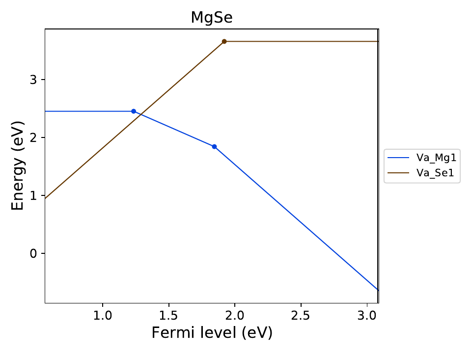

Tutorial of pydefect¶
We here illustrate how to use the pydefect code.
Note1: Pydefect now supports only the vienna ab-initio simulation package (VASP), so we suppose its input and output file names (e.g., POSCAR, POTCAR, OUTCAR) and computational techniques (e.g., periodic boundary condition) used in VASP.
Note2: Units used in pydefect are eV for energy and Angstrom for length following the vasp convention.
Note3: Only nonmagnetic host materials are supposed.
Workflow of a point-defect calculation in a non-metallic solid is shown below.
One can see some tasks are performed concurrently, while others must follow some tasks.
Usually, the set of processes is very intricate and a time-consuming task and researchers are prone to make some mistakes.
The main purpose of pydefect is to provide with automation of almost all the point-defect calculation processes.

Here, we suppose the following directory tree;
The <project_name> is usually the name of material or that with crystal structure, e.g., rutile-TiO 2.
<project_name>
│
├ pydefect.yaml
├ vise.yaml
│
├ unitcell/ ── structure_opt/
│ ├ band/
│ └ dos/
│
├ competing_phases/ ── <competing_phase 1>
│ ├── <competing_phase 2>
│ ....
│
└ defects/ ── perfect/
├─ Va_X_0/
├─ Va_X_1/
├─ Va_X_2/
...
We recommend the users to follow the same directory structure if possible. Details of the process are examined step by step using an example of MgSe calculated using the PBEsol functional.
1. Relaxation of the unit cell¶
Point-defect calculations are generally performed at fixed lattice constants to theoretically relaxed structures at the given functional and projector augmented wave (PAW) potentials, as it avoids the artificial strain and stress responsible for the unwanted supercell size dependence. Therefore, one usually begins with optimizing lattice constants and fractional coordinates of the atomic positions in the unitcell.
We first prepare POSCAR of the pristine bulk unitcell, and create unitcell/ directory and unitcell/structure_opt/
sub-directory ( mkdir -p unitcell/structure_opt/) and move there.
(In this tutorial, the name with / at the end means a directory at any time.)
When pydefect needs to construct the vasp input files, namely INCAR, POTCAR, KPOINTS files,
we use vise (= vasp integrated supporting environment) code that is largely on the basis of pymatgen,
which can generate them for various tasks and exchange-correlation (XC) functionals.
Therefore, as shown pymatgen web page 1 or 2,
we need to set the PMG_DEFAULT_FUNCTIONAL and PMG_VASP_PSP_DIR in the .pmgrc.yaml file at the home directory, e.g.,
PMG_DEFAULT_FUNCTIONAL: PBE_54
PMG_MAPI_KEY: xxxxxxxxxxxxxxxx
PMG_VASP_PSP_DIR: /home/kumagai/potcars/
Here, PMG_MAPI_KEY is required for querying POSCAR of competing materials as shown later.
Input files for optimizing a unitcell using the PBEsol functional are generated by the following command.
Here, the pbe functional is a default in vise, so we need to use the -x option to change the XC functional to PBEsol.
vise vasp_set -x pbesol
Here, vasp_set, or its abbreviation ( vs) , is a sub-command option of the vise main function.
In pydefect and vise, all the sub-commands have their own abbreviations.
In vise, we provide the default POTCAR set regularly we use, but of course, users can adopt their favorite POTCAR set.
In pydefect and vise, users can control various types of parameters using the pydefect.yaml and vise.yaml files, respectively.
For example, we can use potcar_set key for vasp_set by writing vise.yaml as
potcar_set: Mg_pv O_h
Then, the Mg_pv and O_h POTCAR files are used instead of the default normal Mg and O POTCAR files.
Note that pydefect and vise try to find the pydefect.yaml and vise.yaml files
from the current working directory to the parent directly up to the home or root directory.
If the same options exist in multiple yaml files, the value written in the deeper yaml file is prioritized.
Therefore, when pydefect.yaml is located at the top directory of the project and defects/ directory as shown above directory tree,
the parameters written in defects/pydefect.yaml are always used for the pydefect commands.
There are so many keys, which are written in the default.py in the pydefect and vise codes.
For example, one can write in vise.yaml
xc: hse
for the XC functional.
There are also many options for each sub-command. One can always refer its help by e. g.,
pydefect vs -h
for details.
Note that the structure optimization must be generally iterated with 1.3 times larger cutoff energy
until the forces and stresses converge at the first ionic step.
Such iteration of the vasp calculations is not supported by pydefect, but one can easily write the simple runshell scripts to do so.
2. Calculation of band, DOS, and dielectric tensor¶
We then calculate the band structure (BS), density of states (DOS), and dielectric constant. In the defect calculations, the BS and DOS are used for determining the valence band maximum (VBM) and conduction band minimum (CBM), while the static dielectric constant, a sum of ion-clamped and ionic dielectric tensors, is needed for correcting the defect formation energies and eigenvalues of defect-induced deep states.
First, we create band/, dos/ and dielectric/ in unitcell/
and copy POSCAR from unitcell/structure_opt/ and type the following command in each directory,
:
vise vs -x pbesol -t <band, dos or dielectric_dfpt>
vise also provides the plotters of BS and DOS based.
See the manual of vise for details.
4. Calculation of competing phases¶
When a defect is introduced, atoms are exchanged with the hypothetical atomic reservoirs within the thermodynamics framework. In order to calculate a free energy of defect formation that is approximated with the defect formation energy without entropic effect in most cases, we need to determine chemical potentials of exchanged atoms accompanied with creating defects. Usually, we consider the chemical potentials at the condition where competing phases coexist with the host material, which are determined from the chemical potential diagram (CPD).
For this purpose, we create directories in competing_phases/.
We can retrieve POSCARs of the stable or slightly unstable competing phases from [the Materials Project (MP)].
For this purpose, one needs [the API keys] of the MP as mentioned above.
Here, as an example, we obtain the competing materials with MgO of which energy above hull is less than 0.5 meV/atom using
pydefect mp -e Mg O --e_above_hull 0.0005
Particular molecules, namely O 2, H 2, N 2, NH 3, and NO 2
are not retrieved from MP but created by pydefect itself
since these molecules have been calculated as solids in MP,
which could be inadequate for competing phases for the defect calculations.
The bulk structure, namely MgO in this example, has already been calculated, so we do not have to iterate the same calculations,
but make a symbolic link by ln -s ../unitcell/structure_opt MgO after removing Mg1O1_mp-126/.
At this point, you may find these directories,
Mg_mp-1094122/ MgO@ mol_O2/
We then generate INCAR, POTCAR, KPOINTS files for other competing solids or molecules.
In order to compare the total energies, we need to use the same cutoff energy, ENCUT, which is increased to 1.3 times of max ENMAX between the constituent POTCARs.
In case of MgO, ENMAX of Mg and O are 200.0 and 400.0, so we need to set ENCUT = 520, using the vise
for i in *_*/;do cd $i; python ~/my_bin/vise/vise/cli/main.py vs -uis ENCUT 520 ; cd ../;done
Note that, if competing phases are gases, we need to change
ISIF to 2 so as not to relax the lattice constants
(see [vasp manual]),
and KPOINTS to the Gamma point sampling.
This kind of tuning is automatically done with vise.
After finishing the vasp calculations, we can generate the json file for the CPD with
pydefect mcpd -d *_*/
If you rename the CONTCAR and OUTCAR files to e.g., CONTCAR-finish and OUTCAR-finish,
you need to write the following in the pydefect.yaml file,
# VASP file names
outcar: OUTCAR-finish
contcar: CONTCAR-finish
vasprun: vasprun.xml
To plot the CPD, type
pydefect pcpd -y cpd.yaml
With this command, we can depict the Mg-O CPD that is saved as cpd.pdf as well which looks like

In ternary case, it looks like

Here, relative chemical potentials at the vertices are also shown as follows:
+----+---------+--------+---------+
| | mu_Ba | mu_O | mu_Sn |
|----+---------+--------+---------|
| A | -5.927 | 0 | -4.966 |
| B | -5.581 | 0 | -5.312 |
| C | -3.124 | -2.59 | 0 |
| D | -5.352 | -0.114 | -5.198 |
| E | -2.753 | -2.713 | 0 |
| F | -3.558 | -2.37 | -0.226 |
| G | -3.503 | -2.4 | -0.189 |
+----+---------+--------+---------+
If one wants to modify the energies for the CPD, one can directly modify the vertices_MgO.yaml.
Calculations of the competing phases are often laborious,
and sometimes one wants to check the defect formation energies as soon as possible.
Then, pydefect supports one to generate the CPD from the Materials Project database.
To do this, however, one needs to prepare atom energies that are needed to align the element energy standards.
In pydefect, we prepare atom energies for PBE, PBEsol, and HSE06 with the standard vise conditions.
Here we show an example of BaSnO 3:
pydefect mcpd -e Ba Sn O -t BaSnO3 -f $PYDEFECT_PATH/pydefect/chem_pot_diag/datasets/vise_pbe_vasp544_atom_energy.yaml
5. Construction of a supercell and defect initial setting file.¶
We have finished the calculations of the unit cell and competing phases, and are eventually ready for point-defect calculations.
Let’s create defect/ directory and copy unitcell POSCAR file from e.g. unitcell/dos/ to defect/
We then create a supercell and defect-type related files with the supercell (= s) and defect_set (= ds) sub-commands.
Pydefect recommends a nearly isotropic (and sometimes cubic-like) supercell composed of moderate number of atoms.
With the following command, one can create SPOSCAR file
pydefect s
If the input structure is different from the standardized primitive cell, NotPrimitiveError is raised.
At present pydefect constructs them based on the conventional unitcell only.
It is also possible to change the lattice angle of the supercell from those of the conventional unitcell, but not a good idea for point-defect calculations in some cases. For example, we can make a supercell in which a-, b-, and c-axes are mutually orthogonal for hexagonal systems. However, its lattice breaks the original symmetry, which reduces the accuracy of the point-defect calculations and makes it difficult to analyze the defect site symmetry.
One exception is the tetragonal cell, where rotated supercells by 45 degrees are allowed, which is also implemented in pydefect.
In pydefect, a user can also specify the cell matrix, e.g.,
pydefect s --matrix 2 1 1
The supercell_info.json file contains the full information on the supercell,
which can be seen by using the -p option.
Space group: F-43m
Transformation matrix: [-2, 2, 2] [2, -2, 2] [2, 2, -2]
Cell multiplicity: 32
Irreducible element: Mg1
Wyckoff letter: a
Site symmetry: -43m
Cutoff radius: 3.373
Coordination: {'Se': [2.59, 2.59, 2.59, 2.59]}
Equivalent atoms: 0..31
Fractional coordinates: 0.0000000 0.0000000 0.0000000
Electronegativity: 1.31
Oxidation state: 2
Irreducible element: Se1
Wyckoff letter: c
Site symmetry: -43m
Cutoff radius: 3.373
Coordination: {'Mg': [2.59, 2.59, 2.59, 2.59]}
Equivalent atoms: 32..63
Fractional coordinates: 0.1250000 0.1250000 0.1250000
Electronegativity: 2.55
Oxidation state: -2
With the defect_set (=:code:ds) sub-command, we can build the defect_in.yaml file.
An example of defect_in.yaml for MgSe looks as follows,
Mg_Se1: [0, 1, 2, 3, 4]
Se_Mg1: [-4, -3, -2, -1, 0]
Va_Mg1: [-2, -1, 0]
Va_Se1: [0, 1, 2]
where the combination of defect types and their charges are shown. We can modify this file using an editor if necessary. If we want to add dopants, we can type as follows:
pydefect ds -d Ca
There are many tips related to supercell_info.json and defect_in.yaml.
1. The antisites and substituted defects are determined from the difference of the electronegativity.
Default max difference is written in defaults.py, but you can change it via pydefect.yaml as mentioned above.
2. The oxidation states determine the defect charge states.
For instance, the vacancies of Sn 2+ takes 0, -1, and -2,
while those of Sn 4+ take 0, -1, -2, -3, and -4 charge states.
In case of interstitials, the interstitials of Sn 2+ takes the 0, +1, and +2,
while those of Sn 4+ take 0, +1, +2, +3, and +4 charge states.
For the antisites and substituted defects,
pydefect considers all possible combinations of vacancies and interstitials.
So, for example, Sn 2+ -on-S 2- takes 0, +1, +2, +3, and +4 charge states.
The oxidation states are determined using the oxi_state_guesses method of
Composition class in pymatgen.
The users can also manually set the oxidation states as follows:
pydefect ds --oxi_states Mg 4
3. By default, positions of atoms neighboring a defect are perturbed
such that the symmetry is lowered.
This is, however, unwanted in some cases, and then,
displace_distance needs to be set to 0 via pydefect.yaml.
4. If you want to calculate particular defects e. g., only oxygen vacancies,
you can restrict the calculated defects with -k option and a python regular expression,
For example, when typing as follows,
pydefect ds -k "Va_O[0-9]?_[0-9]+"
these directories are created.
perfect/ Va_O1_0/ Va_O1_1/ Va_O1_2/
6. Decision of interstitial sites¶
In addition to vacancies and antisites, one may want to take into account the interstitials. Most people determine them by seeing the host crystal structures, while there are a couple of procedures that recommend the interstitial sites. However, it is generally not an easy task to speculate the most likely interstitial sites because they depend on the substituted element.
The largest vacant space should be most likely interstitial sites for positively charged cations with closed shells are substituted (e. g., Mg 2+, Al 3+), as they tend not to make strong bonding with other atoms. On the other hand, a proton (H +) prefers to locate near O 2- or N 3- to form the strong O-H or N-H bonding. Conversely, a hydride ion (H -) should prefer to locate at very much different places. Therefore, we need to carefully determine the interstitial sites.
pydefect holds a utility that recommends the interstitial sites from
the unitcell all electron charge density using the ChargeDensityAnalyzer class implemented in pymatgen.
To use this, we need to generate AECCAR0 and AECCAR2 based on the standardized primitive cell.
The command of vise for this is
- ::
vise vs -uis LAECHG True
After running the vasp calculation, type
python $PATH_TO_FILE/recommend_interstitials.py AECCAR0 AECCAR2
With this, one can obtain the following output.
a b c Charge Density
0 0.750000 0.750000 0.750000 0.527096
1 0.500000 0.500000 0.500000 0.669109
2 0.611111 0.611111 0.166667 1.020380
3 0.166667 0.611111 0.611111 1.020382
4 0.611111 0.166667 0.611111 1.020382
Host symmetry R3m
++ Inequivalent indices and site symmetries ++
0 0.7500 0.7500 0.7500 3m
1 0.5000 0.5000 0.5000 3m
2 0.6111 0.6111 0.1667 .m
To add the interstitial site at e. g., 0.75 0.75 0.75, we use the interstitial (= i) sub-command like
pydefect ai -s supercell_info.json -p ../unitcell/structure_opt/POSCAR -c 0.75 0.75 0.75
supercell_info.json is then updated, which includes the information of the interstitial sites.
...
-- interstitials
#1
Fractional coordinates: 0.3750000 0.3750000 0.3750000
Wyckoff letter: c
Site symmetry: -43m
Coordination: {'Mg': [2.59, 2.59, 2.59, 2.59], 'Se': [3.0, 3.0, 3.0, 3.0, 3.0, 3.0]}
If we want to add another site at e. g. 0.5 0.5 0.5 , supercell_info.json is again updated.
To pop the interstitial sites, use
pydefect pi -i 1 -s supercell_info.json
Then, the first interstitial locating at (0.75, 0.75, 0.75) is removed from supercell_info.json.
When we try to add the site that is very close to the constituent atoms or other interstitial sites, you will get the warning message as
2019-08-31 17:16:08,029 WARNING pydefect.util.structure_tools Inserted position is too close to X0+.
The distance is 0.210 A.
where X0+ means another interstitial site, and the site is not added.
If you want to add the cite anyway, use the --force_add option.
7. Creation of defect calculation directories¶
We next create directories for point-defect calculations by the defect_entries (= de) sub-command,
pydefect de
With this command, defect calculation directories are created, including perfect/.
If you again type the same command, the following information is shown,
2020/11/24 20:40:27 INFO pydefect.cli.vasp.main_function
--> perfect dir exists, so skipped...
2020/11/24 20:40:27 INFO pydefect.cli.vasp.main_function
--> Va_Se1_1 dir exists, so skipped...
2020/11/24 20:40:27 INFO pydefect.cli.vasp.main_function
--> Va_Se1_2 dir exists, so skipped...
2020/11/24 20:40:27 INFO pydefect.cli.vasp.main_function
--> Va_Se1_0 dir exists, so skipped...
and no directories are newly created. This is a fail-safe treatment so as not to delete the calculated directories by mistake. If you really want to overwrite the directories, you need to remove directories first.
In each directory, we can find the defect_entry.json file,
which contains information about a point defect obtained before running the first-principles calculations.
To see defect_entry.json, again use the -p option.
When you’d like to add some particular defects,
you can modify the defect_in.yaml and use the de option again.
8. Generation of defect_entry.json¶
Sometimes, one want to treat complex defects. For instance, O 2 molecules act as anions in MgO 2, where O 2 molecule vacancies are able to exist. Other important examples are the methylammonium lead halides (MAPI), where methylammonium ions acts as singly positive cations (CH 3 NH 3 +), and DX centers, where anion vacancies and interstitial cations coexist.
In these cases, one needs to prepare the input files and runs the vasp calculations by oneself.
Then, generates defect_entry.json
by parsing the POSCAR files and directory name with defect calculation results
using the create_defect_entry.py script as follows.
python $PATH_TO_FILE/create_defect_entry.py complex_2 complex_2/POSCAR perfect/POSCAR
This creates the defect_entry.json file.
The directory name is then parsed as
A_B_C -> name='A_B', charge=C
This can be used when one already finished the defect calculations,
but wants to use pydefect for the post-processing.
9. Parsing supercell calculation results¶
Then, let’s run the vasp calculations.
We recommend the users to use the Gamma version of vasp if the k-point sampling is only the Gamma point for very large supercells.
After (partly) finishing the vasp calculations, we can generate the dft_results.json
that contains the first-principles calculation results related to the defect properties.
By using the calc_results (=:code:cr) sub-command as follows,
we can generate dft_results.json in all the calculated directories.
pydefect cr -d *_* perfect
When you want to generate dft_results.json for some particular directories, e.g., Va_O1_0, type
pydefect cr -d Va_O1_0
10. Corrections of defect formation energies in finite-size supercells¶
When the supercell method is adopted, the total energies for charged defects are not properly estimated due to interactions between a defect, its images, and background charge. Therefore, we need to correct the total energies of the charged defect supercells to those in the dilution limit.
The corrections are performed using the extended_fnv_correction (=:code:efnv) sub-command,
pydefect efnv -d *_* -pcr perfect/calc_results.json -u ../unitcell/unitcell.json
For the corrections, we need the static dielectric constants and atomic site potentials in the perfect supercell.
Therefore, the paths to unitcell.json and calc_results.json files must be assigned.
Bear also in mind that this command takes some time,
so we recommend the users to prepare coffee or go on a walk outside during this process.
The correction in pydefect at this moment is now performed with
the so-called extended Freysoldt-Neugebauer-Van de Walle (eFNV) method.
If one uses the corrections, please cite the following papers.
- [Y. Kumagai*, and F. Oba, Electrostatics-based finite-size corrections for first-principles point defect calculations, Phys. Rev. B, 89 195205 (2014).](https://journals.aps.org/prb/abstract/10.1103/PhysRevB.89.195205)
- [C. Freysoldt, J. Neugebauer, C. Van de Walle, Fully Ab Initio Finite-Size Corrections for Charged-Defect Supercell Calculations, Phys. Rev. Lett., 102 016402 (2009).](https://journals.aps.org/prl/abstract/10.1103/PhysRevLett.102.016402)
One obtains correction.pdf file, which contains information about defect-induced and point-charge potential,
and their differences at each atomic site as shown below.
The width and height of the horizontal lines indicate the averaged region and ∆V PC, qb | far, respectively.
When performing the corrections, I strongly recommend you to check
all the correction.pdf files for your calculated defects so as to reduce careless mistakes as much as possible.
11. Check defect eigenvalues and band-edge states in supercell calculations¶
Generally, point defects are divided into three types.
(1) Defects with deep localized states inside the band gap. This type of defect is generally considered to be detrimental for device performances as the carriers are trapped by the localized states. Furthermore, they could act as color centers, as represented by vacancies in NaCl. Therefore, it is important to know the position of the localized state and its origin.
(2) Defects without any defect states inside the band gap, which would not affect the electronic properties as long as their concentrations are sufficiently low.
(3) Defects with hydrogenic carrier states, or perturbed host states (PHS), where carriers locate at the band edges with loosely trapped by the charged defect centers. Examples are the B-on-Si (p-type) and P-on-Si (n-type) substitutional dopants in Si. These defects also do little harm for device performances, but introduce the carrier electrons or holes or compensate other charged defects. The wavefunctions of the PHS widespread to several million atoms, so we need to adopt supergiant supercells for estimating their thermodynamical transition levels, which is prohibitive with first-principles calculations thus far. Therefore, we instead usually avoid calculating these quantities and denote that the defects have PHS and their transition energies locate near band edges only qualitatively.
See some examples from our published papers. - [Y. Kumagai*, M. Choi, Y. Nose, and F. Oba, First-principles study of point defects in chalcopyrite ZnSnP2, Phys. Rev. B, 90 125202 (2014).](https://link.aps.org/pdf/10.1103/PhysRevB.90.125202) - [Y. Kumagai*, L. A. Burton, A. Walsh, and F. Oba, Electronic structure and defect physics of tin sulfides: SnS, Sn2S3, and SnS2, Phys. Rev. Applied, 6 014009 (2016).](https://link.aps.org/doi/10.1103/PhysRevApplied.6.014009) - [Y. Kumagai*, K. Harada, H. Akamatsu, K. Matsuzaki, and F. Oba, Carrier-Induced Band-Gap Variation and Point Defects in Zn3N2 from First Principles, Phys. Rev. Applied, 8 014015 (2017).](https://journals.aps.org/prapplied/abstract/10.1103/PhysRevApplied.8.014015) - [Y. Kumagai*, N. Tsunoda, and F. Oba, Point defects and p-type doping in ScN from first principles, Phys. Rev. Applied, 9 034019 (2018).](https://journals.aps.org/prapplied/abstract/10.1103/PhysRevApplied.9.034019) - [N. Tsunoda, Y. Kumagai*, A. Takahashi, and F. Oba, Electrically benign defect behavior in ZnSnN2 revealed from first principles, Phys. Rev. Applied, 10 011001 (2018).](https://journals.aps.org/prapplied/abstract/10.1103/PhysRevApplied.10.011001)
To distinguish the defect types, one needs to see the defect levels and judge if the defects create the PHS or defect localized states.
Pydefect shows the eigenvalues and band-edge states by the following three steps.
Firstly, one can generate the band_edge_eigenvalues.json and eigenvalues.pdf files with the following command.
pydefect eig -d *_* -pcr perfect/calc_results.json
The eigenvalues.pdf file shows the
These are examples of V Mg -2 and V Mg 0 in MgSe.
Here, one can see occupations of single-particle levels in the spin-up and -down channels.
The x-axis and y-axis are fractional coordinates of sampled k points and single-particle energy in the absolute scale, respectively.
Filled circles inside the figures are eigenenergies in the defect supercells.
There are also five lines, namely VBM and CBM in the unitcell (blue), those in the perfect supercell (red), and the Fermi level in the defect supercells.
The numbers in the figures indicate the band indices, which are shown discretely.
The filled circles are categorized into blue, green, and orange ones
which mean the occupied, partially occupied (from 0.1 to 0.9), and unoccupied eigenstates in the defect supercell, respectively.

Secondly, we generate edge_characters.json with the command.
pydefect edge_characters -d *_* -pcr perfect/calc_results.json
Finally, we can show the edge states
pydefect edge_states -d *_* -p perfect/edge_characters.json
-- Mg_i1_0
spin up Donor PHS
spin down Donor PHS
-- Mg_i1_1
spin up Donor PHS
spin down No in-gap state
-- Mg_i1_2
spin up No in-gap state
spin down No in-gap state
-- Va_Mg1_-1
spin up No in-gap state
spin down In-gap state
-- Va_Mg1_-2
spin up In-gap state
spin down In-gap state
-- Va_Mg1_0
spin up No in-gap state
spin down In-gap state
There are four states donor_phs, acceptor_phs, localized_state, no_in_gap,
the former two are considered as shallow states, and omitted for energy plot by default.
We emphasize that the automatically determined band-edge states could be incorrect as it is difficult to determine them. Therefore, please carefully check the band-edge states, and draw their band-decomposed charge density if the band-edge states are not so obvious.
12. Plot defect formation energies¶
Here, we show how to plot the defect formation energies.
The plot of the defect formation energies requires multiple information, namely band edges, chemical potentials of competing phases, total energies of perfect and defective supercells.
Here, we plot the defect formation energies as a function of the Fermi level with the plot_energy (=:code:pe) sub-command
pydefect e --unitcell ../unitcell/unitcell.json --perfect perfect/calc_results.json -d Va*_* -c ../competing_phases/cpd.yaml -l A
which shows like,
When changing the condition for chemical potential, namely the position of the vertex in the CPD,
use the -c option.